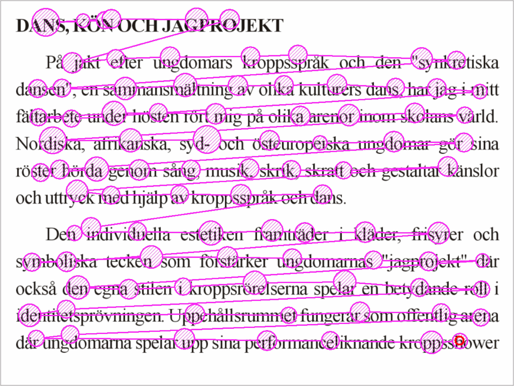
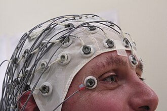

Of birds and planes
I sometimes struggle to explain to people outside the field why psycholinguists like me use large language models to investigate how people understand language. This post breaks it down in a very simplified way: one important thing that happens when you read or listen, how language models perform something at least superficially similar, and why that comparison actually teaches us something.
Your brain is always one step ahead
Try finishing this:
She put on her coat, picked up her keys, and walked out the ___
You almost certainly thought about door.
Now this one:
The scientist published her results in a peer-reviewed ___
You probably thought about journal. Or maybe paper.
He had a coffee and a ___
Croissant? Slice of cake? Brownie? This one is harder. Several continuations fit equally well.
On some occasions, words are much easier to predict than on others. It seems that predicting the next word is something your brain does automatically, all the time, without you noticing.
How do we actually know the brain predicts?
How do we know this also happens passively when you read or listen? You can’t feel your brain making predictions.
Scientists have found ways to figure this out.

{kind=link}
One way is tracking people’s eyes while they read. Your eyes don’t slide smoothly across a page. They jump from word to word. It looks like the figure on the right: circles where your eyes stop (called fixations), and lines where they jump (called saccades). And it turns out that the eyes spend less time on predictable words, sometimes skipping them entirely, while lingering on surprising ones. The brain already has a good guess for predictable words, so it doesn’t need to look as carefully.
There’s also a more direct way to look into the brain. Your brain runs on electricity: billions of cells communicating through small bursts of electrical activity, these are your neurons. All those tiny signals add up, and some of that activity actually reaches the surface of your head. By placing small sensors on someone’s scalp (a technique called EEG, for electroencephalography), you can pick up those signals while the person reads. It looks like a cap covered in wires, and what it records is a kind of summary of what millions of neurons are doing at each moment. When a word shows up that the reader didn’t expect, the electrical response shifts. The more surprising the word, the bigger the shift.

{kind=link}
Context is everything
Watch what happens when you add more context to the last example, “He had a coffee and a ___“. Now we have, for example:
He was celebrating his birthday. He had a coffee and a ___
The continuation slice of cake is much more obvious.
Guesses become easier the further into a sentence you get. Your brain pulls in everything available: the words already said, what makes sense in the real world, what people typically say in that kind of situation. More context generally means fewer plausible options, and easier guesses.
The same thing happens when you listen. You start processing what someone is saying before they’ve finished the sentence. In conversation, people often begin composing their reply while the other person is still speaking, because they can already tell where it’s going.
What large language models are doing
Large language models are programs trained by reading enormous amounts of text, including books, news articles, websites, and conversations.
The training works like this: the model sees a sequence of words and tries to guess what comes next. When it’s wrong, it adjusts a little. After billions of rounds, it develops something like an intuition for how language flows, which words tend to follow which, in what contexts. This next-word prediction task is actually the foundation of chatbots like ChatGPT. Before a chatbot can hold a conversation or answer your questions, it first has to learn the patterns of language by practicing exactly this: predicting the next word, over and over, on enormous amounts of text.
What makes a language model bigger or smaller comes down to parameters: numbers inside the model that get adjusted during training. Think of them as tiny knobs. Each knob controls a small part of how the model responds to a word or a pattern. More knobs means finer distinctions and subtler patterns. Fewer knobs means a rougher, blurrier picture of the language.
Of birds and planes
Are human minds and language models the same thing? Definitely not. They are as different as birds and airplanes. One is alive and evolved over millions of years; the other is engineered metal. They also have very different motivations for flying. But they both fly, and they both succeed because they exploit the same physics: aerodynamics, the way air flows around a wing.
Studying airplanes can teach us a lot about the medium birds fly through. Not about feathers or muscles, but about what makes flight possible in the first place.
Something similar is going on with language models and human minds. They’re built completely differently, but they both navigate the same thing: language. By studying what a model finds predictable or surprising, or how it encodes words, we learn about regularities in the language: what tends to appear where, what’s common, what’s unusual. Those are the same regularities that shape how our brains process words.
How far this analogy stretches is genuinely controversial. Some researchers argue that language models are so different from brains that comparing them is misleading. Others think the similarities go deeper than we’d expect. Nobody has settled this, and figuring it out is an intriguing open question in the field right now.1
How to cite this post
BibTeX:
@misc{nicenboim2026ofbirdsandplanes,
author = {Nicenboim, Bruno},
title = {Of birds and planes},
year = {2026},
month = {May},
url = {https://bruno.nicenboim.me/posts/posts/2026-05-07-of-birds-and-planes/},
doi = {10.5281/zenodo.20084629}
}APA:
Nicenboim, B. (2026, May 07). Of birds and planes. https://doi.org/10.5281/zenodo.20084629
Footnotes
For a longer treatment of this analogy, see Grace Lindsay’s Planes don’t flap their wings: does AI work like a brain? on Aeon.↩︎